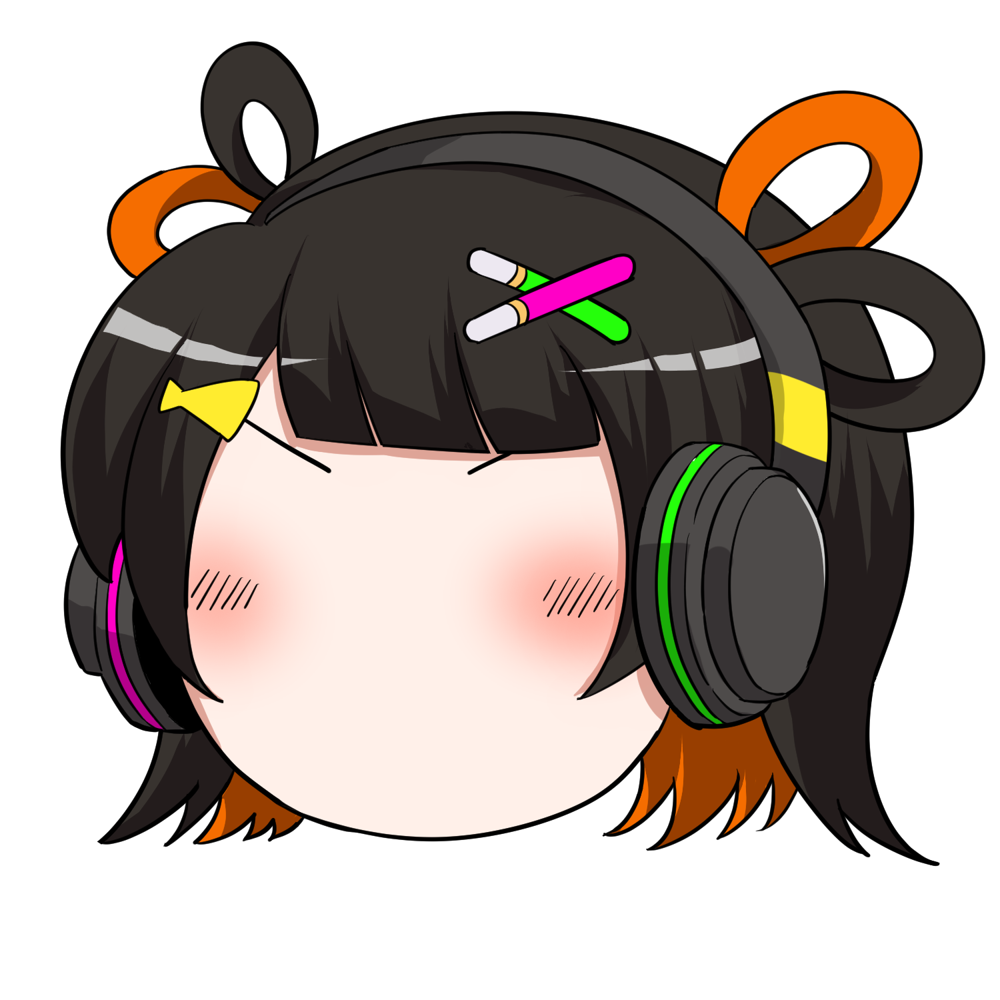
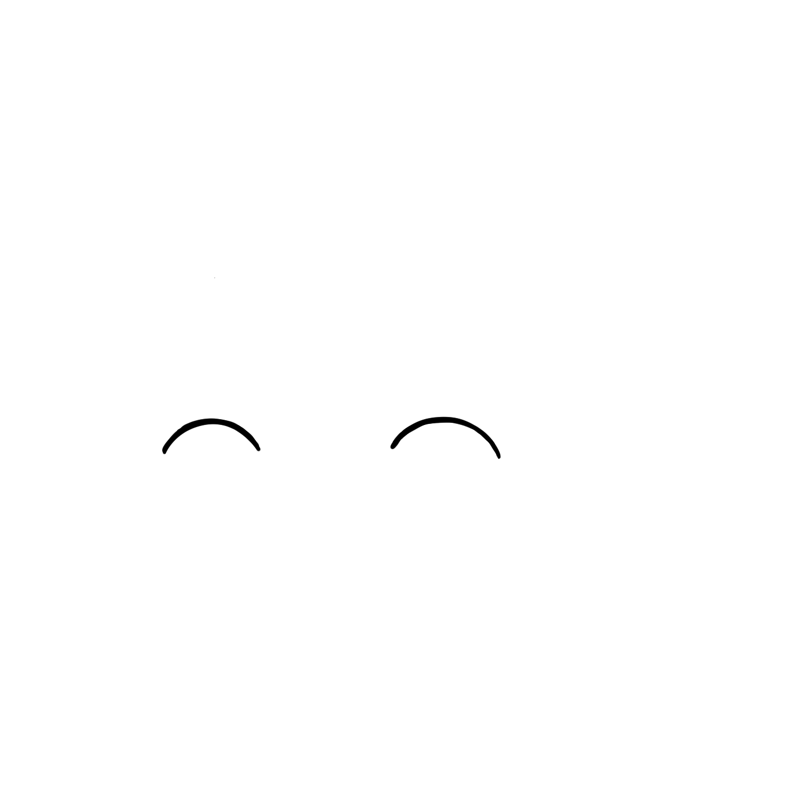
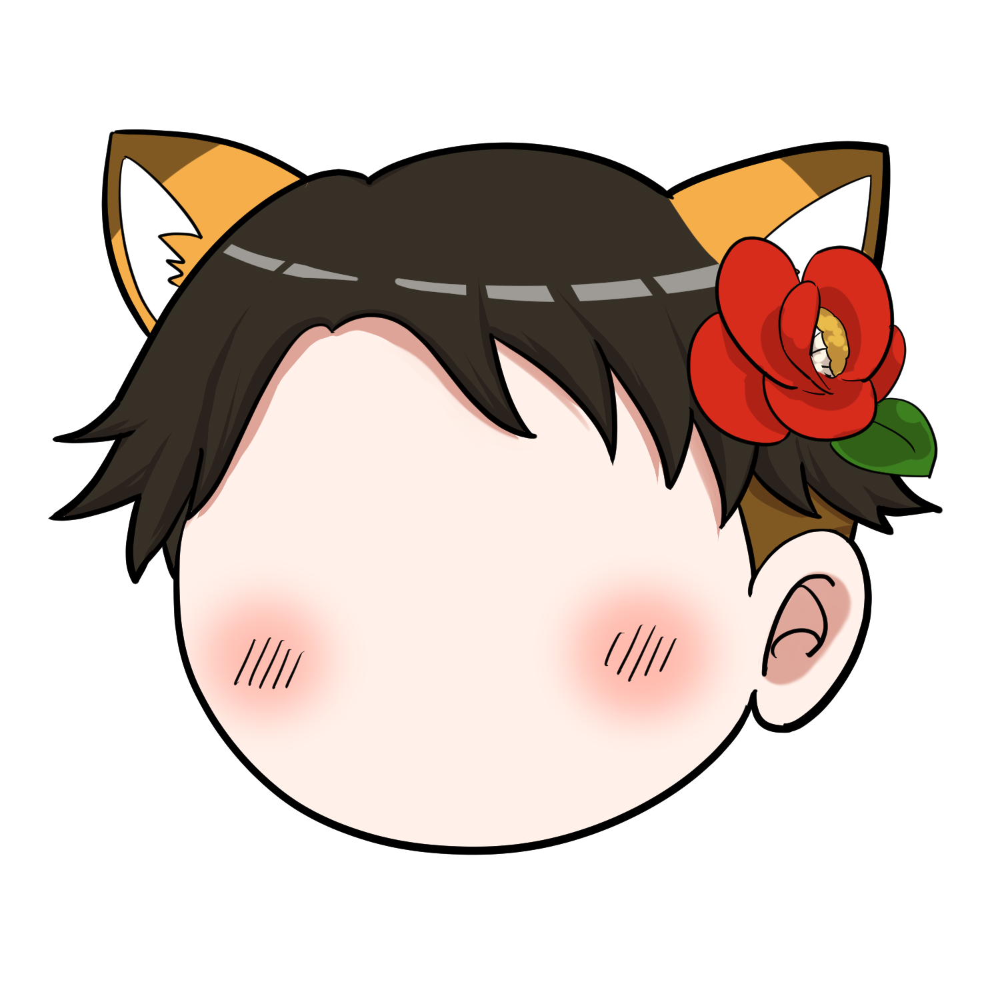
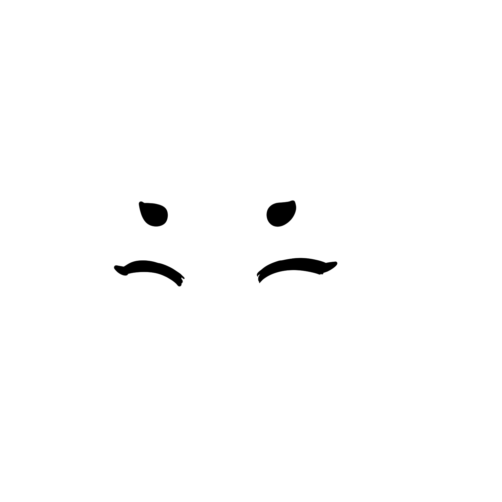
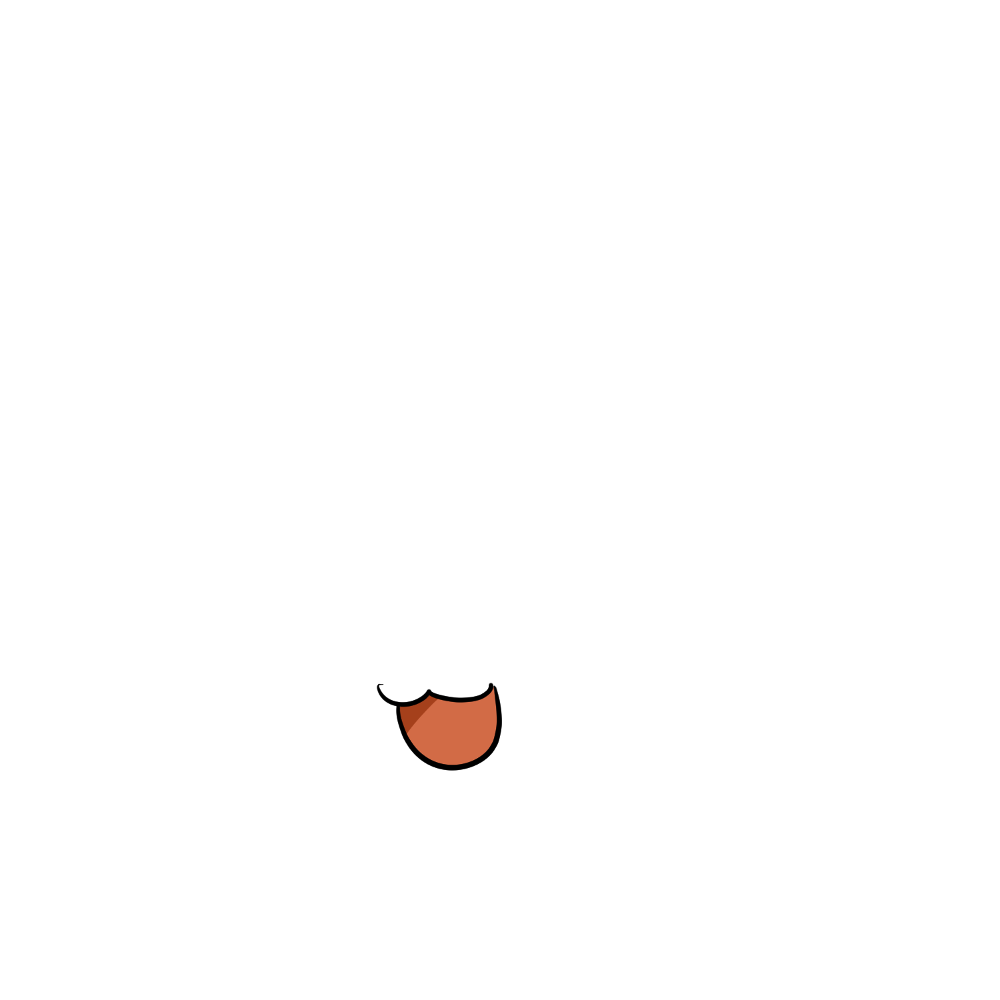
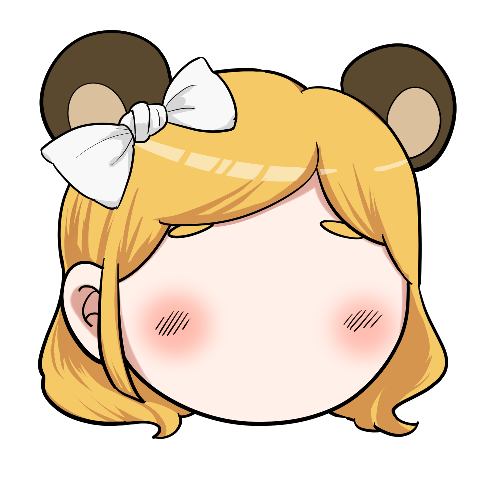
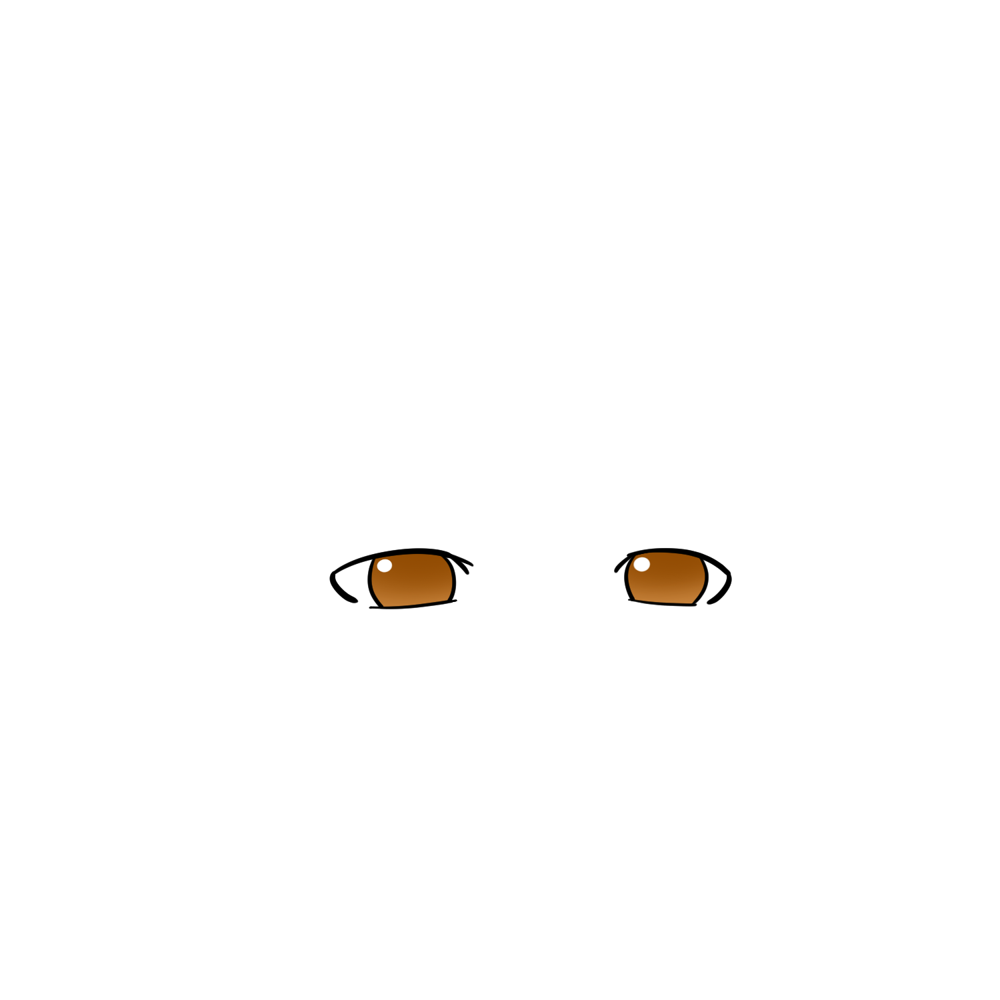

ゆっくり3人組が、
配信を盛り上げます。
あなたの代わりではなく、あなたと一緒に。
いま下で動いているのが、その本物です。
あなたの代わりではなく、あなたと一緒に。
いま下で動いているのが、その本物です。
操作していません。勝手に喋っています。
喋る。ゲームを進める。コメントを拾う。間を持たせる。——ぜんぶ同時に。
ひとりでやる配信は、3人分の仕事を1人でやっているようなものです。
配信の定番の助言は、いつも同じです。「絶対に無言になってはいけない」。
——分かっていても、喋り続けながら他のことをやるのは、単純に大変です。
characterlive は、その一部を肩代わりします。
3人が勝手に喋ります。あなたが黙っていても、場が途切れません。
人が増えても、居場所がなくなりません。
全員が同じことを言っても意味がないので、役割を分けています。


りんく
何があっても味方。否定しません
「ボクは4回目でもちゃんと聞くのだ！」



こん太
素直で元気。まっすぐ褒めます
「3回目ならボクもう覚えたよ！次はいっしょに言えるよ！」


たぬ姉
遠慮なくツッコむ。でも最後は肯定します
「そりゃそうよ。あなた今日、同じ話もう3回してるもの」
正解を教えてくれる道具は、もう足りています。
| ふつうのAI | characterlive | |
|---|---|---|
| 役割 | 正しい答えを出す | そばにいる |
| あなたが迷った時 | 「やめておくのが賢明です」 | 「やってみればいいのだ」 |
| 口調 | 丁寧・真面目 | ため口・たまに毒舌 |
| 人数 | 1人 | 3人（勝手に掛け合います） |
真面目なAIに相談したら正論で殴られて凹んだ、という話はよく聞きます。 この3人は、正論を言う係ではありません。
良いところだけ書いても、使った後でがっかりさせるだけなので。
既定では画面に出ません。あなたにしか見えないので、視聴者は気づきません。 出したい人だけ、配信に映せます。どちらにするかはあなたが選べます。
画面を閉じている間は動きを止めます。絵は軽い版に差し替えて、 読み込みを 9.6MB → 303KB（約97%減）にしてあります。
いまは不要です。開くだけで3人が喋ります。 将来「あなたの声を聞いて答える」機能を足しますが、そのときも使うかどうかは選べます。
いいえ。ブラウザで開くだけなので、どの配信サイトでも、配信していなくても使えます。
勝手には変えません。使っている途中で性格が別人になると悲しいので、 変える場合も元の3人を残します。
声で喋る版ができたら、最初にご連絡します。
「こんな子がほしい」「この一言が刺さった」も、そこで聞かせてください。
友だち追加するだけです。いつでも解除できます。